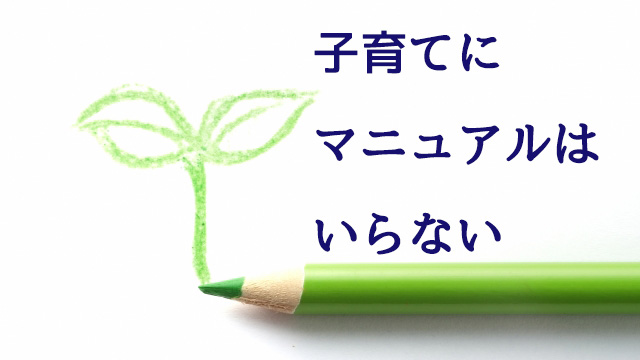

先日、自宅マンションのエレベーターで３，４歳くらいの男の子を連れた母親と乗り合わせた。その若い母親は子どもに優しく行き先（１階）のボタンを押すよう指示している。「ほらぁ○○ちゃん、ボタン押すのよ～」と悠長な様子。だが子どもは妙にモタモタしてなかなか上手く押せないでいる。
それでも母親は、モタつく我が子を急かせるわけでもなく相変わらず鷹揚にながめている。
トビラが閉まってもその子がボタンを押さない限りエレベーターは動いてくれない。
私は急いでいるせいもあり少しイラッと来た。
つい数日前もデパートのエレベーターで同じような光景に出会ったせいもある。
その時もやはり母親が子どもにボタンを押させ、他の乗客を待たせる結果になっていた。
せっかちな私はこういうときイライラしてしまう。「こんなところで子どもの自主性を発揮させなくてもいいからアンタがさっさと押せよ！」と言葉は悪いが母親に言いたくなってしまう。
マァ、母親に悪気はなくボタンを押したがる我が子―男の子は特にそうだろう―の「したいことをさせてやろう」という教育方針を実践しているだけなのだろうとは思う。
だが「したいことをさせる」のは良いとしてそれが他者の迷惑を省みない、つまり公共のマナーを度外視したものならばそれは自主性（主体性）の獲得にはつながらない。子どもを自由に伸び伸び育てることと他者の都合を無視することは同じではない。
家の中という私的空間では許されても公共の場では許されないと知るべきだ。
ところでこれとは正反対に、我が子が他人に迷惑な行為をしているのではとやたらに気にかける親もいる。たとえば他人の家に招待されて飲み物をこぼしたとか、人のオモチャを壊したとかいうとき必要以上に謝りまくり我が子を叱りつけるケース。
こういう親は外で子どもが少しでも騒ぐと「シィー、静かに」とただちに注意する。
過剰に他人の眼を気にしているのだ。
この２つの例は子どものしつけに関するものだが、観察すると多くの親は大体このどちらかに傾くのではないか。
前者（エレベーターのケース）は、子どもの行動をあまり制限せず「したいこと」を優先するタイプ。後者は「他人に迷惑をかけない」ことを優先し厳しく接するタイプだ。
あなたはどちらのタイプだろうか。
親の思う通りに子を育てよ
ここで少し視点を変えて子育てやしつけに関する親の側の心理について考えてみたい。
多くの親は「あまり甘やかして将来ワガママな人間になっても困る」「小さいうちは厳しくしつけておかなくては…」「しかしあまり厳し過ぎて子どもが萎縮しても…それに虐待と見られるのも嫌だし」など色々迷いながら子育てにあたっていると思う。
中には「子どものうちくらいは自由奔放であっても良いのではないか」「少しくらい人に迷惑をかけても伸びやかに育つほうが将来のためになる」と豪胆（⁉）に腹をくくっている親もいるかも知れない。
また少数ながら子どもが自分の思うようにならず、どう接して良いかも分からなくなり子どもと「向き合う」ことを避けている（放棄している）人もいる。
放棄と言ってもいわゆる「育児放棄」ではなく、自分（親）の考えている理想の子育てが現実では通用せずそのことで自信を失っている場合だ。現にこういうタイプの親はインテリつまり頭で考えその通り実行しようとする真面目な人が多い。だからこの場合放棄というより逃避というべきかも知れない。
だがもっとも多いのは、それほど深く考えず色々迷いながらもその都度子どもの様子に対応するケースだろう。時には厳しく時には甘く。悪く言えば場当たり的だが良く言えば臨機応変ということになる。私はこれで十分だと思う。
なぜなら親も決して「完璧な人間」ではないからだ。欠点も弱点も悩みも抱える一個の人間である。考えてみれば子育てのプロなどいない。誰でも―特に若い親―は手探りで子どもを育てていくしかない。
たとえ権威ある育児書や子育てマニュアルを読んだとしても、そしてその通り実行したとしても我が子が立派な人間に育つ保証などないのだ。
「こういうときは厳しく叱るべきか。優しく言葉で教えさとすべきか⁉」
このように色々迷い悩みながら、時には過ちを犯しながらもその都度子どもと正面から向き合い続けるしかない。いや、むしろ「親も間違うこともある」と子どもに示すことのほうが子育て上は有益でさえあると私は思っている。
というのも、子どもだって思春期くらいになれば「ウチの親はココがダメなところなんだよなァ」と案外冷静に理解するものだからだ。そしてちゃんと親の「良いところ」だけ取り入れようとする。だから少々間違えても子どもの復元力を信じて自分の思う通り子育てにあたれば良いのだ。
時代の流行に惑わされない
「自分の思う通り子育てをすれば良い」と言ったがひとつだけ気をつけて欲しいことがある。
「自分の思う通り」が本当に自分の思いなのか点検して欲しいということ。というのも多くの親は自分の親から受けた「子育て法」を無意識にくり返していることが多いからだ。自分の考えと思うものの大半は親から受け継いだもの、あるいはその時代の常識に過ぎない。そのことに気づくことが大事だ。
「これはすべき」「あれはすべきじゃない」という当たり前に感じる信念こそ疑ってみて欲しい。そういう信念は本当に自分が考えたことなのか単にそう「信じ込まされてきた」ものなのかいちどは振り返って欲しい。
そうすれば時代遅れの古い価値観を子どもに押しつけずに済むからだ。
先に「迷いながら悩みながら」と言ったのもそういう自己省察のクセをつけて欲しいからに他ならない。といって難しい話ではない。
子どもに何か言いたくなったとき「そういえばコレって親爺の口グセだったな…」と思い出すようなレベルでいい。きっと苦笑したくなるだろう。そんなことで子どもへの悪影響は格段に防ぐことができる。あなたが自らを客観的に眺めたからだ。
あと「時代の常識」と言ったが、これについても注意したい。人はどうしてもその時代の常識つまり流行の考えに影響を受けてしまう。特に一見時代の最先端をいくような考えを取り入れがちだ。子育てに関してもこれは変わらない。先にも言ったが権威ある学者の書いた育児書やメディアが喧伝する「新しい子育て法（マニュアル）」に飛びつき妄信するのは実は危険と言える。
かつてスポック博士の育児書などアメリカ発の育児論に日本中が飛びついたことがあったが、この何でもかんでもアメリカ流教育法を妄信することで悲喜劇が起こったのを覚えているだろうか。
たとえば赤ん坊はうつぶせで寝かせるのが良い→窒息死する赤ちゃん続出しすたれる。
子どもは早くから個室を与えて自立性を養うべし→孤立化や家族の絆崩壊を招く…等々。
私はアメリカ流の子育て法が悪いと言ってるのではない。それらはすべて真面目な学説つまり仮説であって、仮説なら科学と同じで当然誤りもあるという話に過ぎない。ある時代皆が信じていた科学的根拠（学説）が後代になって引っくり返るのはザラにある話だ。
問題はそのような「時代の常識」を安易に絶対だと信じてしまう人々の態度にある。そこには「何が正しいのか」真実（正解）を知りたいという人々の願いがあるわけだが、こと子育てにとって正解を求める姿勢は危険だと感じる。
実は冒頭のエレベーターの話も、私が不快感を覚えたのは子どもにボタンを押させる母親の姿に「私は子どもの自主性を重んじてます」という、いかにもアメリカ流子育てマニュアルに書いてあるような正解をなぞっている印象を感じたからだ。子どもを正解という「鋳型」にはめこむことは真の愛情でも正しい育児でもない。
そもそも子育てに正解などない。正解がないからこそ子どもと共に過ごす一瞬一瞬が貴重で輝かしい光を放つのだ。たとえそこに過ちが含まれていたとしても、それも後でふり返れば家族としてのかけがいのない思い出として子どもの胸によみがえるだろう。
親は子どもの前でいつも「正しい人間」である必要はない。どんな親であったかは子どもが後年決めることだからだ。